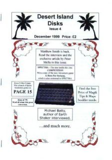

|
|  |
It’s got colour! On the cover, in the fanzine, dabbed around like Michaelangelo’s finest paintings, there’s colour! And that’s only the beginning, enhancing as it does the clear and competent layout. There’s an index for people like Jon who get confused when text changes from page to page, although the articles are so clearly labelled and separated from each other than even he had precious few problems.
The content of the magazine is quite standard fare in many respects, composing as it does of reviews, a couple of interviews and some tips. However, the execution is far from standard. In the issue we had (number four, December 1999) the interviews were very well conducted, and the feature on the eponymous Matthew Smith well-researched and probing. The actual reviews touched on nearly all pertinent aspects of the games in question, the comments reflecting clear thought and much knowledge from which to draw. There were also plenty of them compared to every other fanzine; indeed, along with the well-researched tips, actual Speccy games seem to be Desert Island Disks' speciality. This focus on the games that made the original Spectrum great and how to finish them gives the fanzine a great feel, harkening back as it does to the heady days of 80s magazines when those glorious monochrome (and sometimes colour) pictures jostled with Amiga and Amstrad games for page space. But fear not, Spec-chums of today, for space is also given to the developing retro scene, keeping (somewhat brief) tabs on the latest and greatest remakes to hit your PC. Although the editor prefers original games for the Speccy himself, the very fact that the retro coverage exists says much about the fanzine: namely, that it is concerned with truly representing the Speccy and its community in whatever form they might take. And for this it deserves much praise, since it covers much and, more than that, really invites the reader to be part of its little Sinclair-focused world. The text may occasionally lose its focus and not always leap out of the pages, but these critiques do not reduce the fanzine as a whole. Desert Island Disks (or DID) may be a relative new-comer to the fanzine scene, but there is much about it that more established fanzines should take note of. As the tag line says, if you only buy one fanzine each month… make it this one. On second thoughts, don’t, and then we can steal the writers for YS3! (Sounds of angry DID editor beating writer sharply about the head with a handy palm tree.) Okay, okay… I was only joking! Owww… Seriously, with so many fanzines closing, this is one that really does deserve your practical and moral support, plus you will get issues and issues of top-notch Speccy journalism-stuff! What more could anyone possibly want? I know that’s all Bob needs… well, that and his Toffee Cream Slices, but that goes without saying. |
|
Last Page - Next Page
Contents |